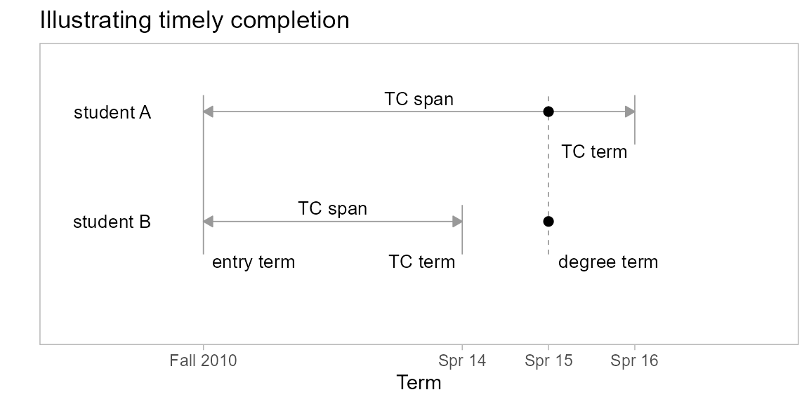

Students generally expect to complete a program within some span of years after entry. IPEDS defines timely completion as one of three values: 100%, 150%, or 200% of the “normal” time to completion at the institution. For a 4-year institution, the 150% model (6 years) is in common use.
However, the span over which program completion might be considered “timely” is highly dependent on the choices a student makes such as transferring institutions or changing majors.
For example, the figure illustrates the history of two students who enter in Fall 2010 and graduate in Spring 2015. We assume a basis of 6 years for timely completion.
Student A is a first-time-in-college student with a timely completion (TC) term of Spring 2016. Their completion is timely because their degree term comes before their TC term.
Student B is a transfer student, entering as a junior. Having already satisfied 2 years of program requirements, their TC term is Spring 2014. Their completion is not timely because their degree term comes after their TC term.

midfieldr functions
packages
# packages used
library("midfieldr")
library("midfielddata")
library("data.table")
library("ggplot2")
# optional code to control data.table printing
options(datatable.print.nrows = 10,
datatable.print.topn = 5,
datatable.print.class = TRUE)data
# load data tables from midfielddata
data(student, term, degree)To illustrate how we estimate and apply the timely completion term, we start with the case study students.
# case study IDs and CIP codes
study_students
#> mcid cip6
#> <char> <char>
#> 1: MID25783178 143501
#> 2: MID25783197 140801
#> 3: MID25783388 141901
#> 4: MID25783441 140801
#> 5: MID25783491 141001
#> ---
#> 8215: MID26696958 141901
#> 8216: MID26696967 141901
#> 8217: MID26697163 141901
#> 8218: MID26697444 141901
#> 8219: MID26697447 141001To confirm that the pool of students are all degree-seeking, we use filter_match() to match to the IDs in the student table.
# limit population to degree-seeking students
DT <- filter_match(study_students,
match_to = student,
by_col = "mcid")
# examine the result
DT
#> mcid cip6
#> <char> <char>
#> 1: MID25783178 143501
#> 2: MID25783197 140801
#> 3: MID25783388 141901
#> 4: MID25783441 140801
#> 5: MID25783491 141001
#> ---
#> 8215: MID26696958 141901
#> 8216: MID26696967 141901
#> 8217: MID26697163 141901
#> 8218: MID26697444 141901
#> 8219: MID26697447 141001We use add_timely_term() to estimate the timely completion term. View its help page by running
? add_timely_termadd_timely_term() accesses the term table and adds a new column, timely_term, to the data frame input. For example,
# estimate the timely completion term
DT <- add_timely_term(DT, midfield_table = term)
DT
#> mcid cip6 timely_term
#> <char> <char> <char>
#> 1: MID25783178 143501 20003
#> 2: MID25783197 140801 19923
#> 3: MID25783388 141901 19923
#> 4: MID25783441 140801 19973
#> 5: MID25783491 141001 20013
#> ---
#> 8215: MID26696958 141901 20163
#> 8216: MID26696967 141901 20153
#> 8217: MID26697163 141901 20143
#> 8218: MID26697444 141901 20153
#> 8219: MID26697447 141001 20163The timely_term column contains the estimate of the timely completion term for each student. The basic heuristic starts with span number of years for each student (default 6 years) and adjusts the span by subtracting a whole number of years based on the level at which the student is admitted.
For example, a student admitted at the second-year level is assumed to have completed one year of a program, so their span is reduced by one year. Similarly, spans are reduced by two years for students admitted at the 3rd-year level and by three years for students admitted at the fourth-year level. The adjusted span of years is added to their starting term; the result is the timely completion reported in the timely_term column added to the data frame.
Optional arguments include details and span.
add_timely_term(dframe,
midfield_table,
...,
details = NULL,
span = NULL)span argument has a default setting of 6 years but can be reset by the user, e.g., including the argument span = 4
details argument default is FALSE. When set to TRUE, additional columns are provided providing the information on which the timely_term was based.Setting details to TRUE yields additional columns for
term_ilevel_iadj_span
# estimate the timely completion term with details shown
DT <- add_timely_term(DT,
midfield_table = term,
details = TRUE
)
DT
#> mcid cip6 term_i level_i adj_span timely_term
#> <char> <char> <char> <char> <num> <char>
#> 1: MID25783178 143501 19946 01 Freshman 6 20003
#> 2: MID25783197 140801 19871 01 Freshman 6 19923
#> 3: MID25783388 141901 19871 01 Freshman 6 19923
#> 4: MID25783441 140801 19921 01 Freshman 6 19973
#> 5: MID25783491 141001 19961 01 Freshman 6 20013
#> ---
#> 8215: MID26696958 141901 20111 01 Freshman 6 20163
#> 8216: MID26696967 141901 20101 01 Freshman 6 20153
#> 8217: MID26697163 141901 20101 02 Sophomore 5 20143
#> 8218: MID26697444 141901 20101 01 Freshman 6 20153
#> 8219: MID26697447 141001 20111 01 Freshman 6 20163If the input data frame has existing columns matching any of the new added columns, the existing columns are overwritten. Thus, you can repeat running the function and still obtain the expected results,
# repeat
DT <- add_timely_term(DT,
midfield_table = term,
details = TRUE
)
DT
#> mcid cip6 term_i level_i adj_span timely_term
#> <char> <char> <char> <char> <num> <char>
#> 1: MID25783178 143501 19946 01 Freshman 6 20003
#> 2: MID25783197 140801 19871 01 Freshman 6 19923
#> 3: MID25783388 141901 19871 01 Freshman 6 19923
#> 4: MID25783441 140801 19921 01 Freshman 6 19973
#> 5: MID25783491 141001 19961 01 Freshman 6 20013
#> ---
#> 8215: MID26696958 141901 20111 01 Freshman 6 20163
#> 8216: MID26696967 141901 20101 01 Freshman 6 20153
#> 8217: MID26697163 141901 20101 02 Sophomore 5 20143
#> 8218: MID26697444 141901 20101 01 Freshman 6 20153
#> 8219: MID26697447 141001 20111 01 Freshman 6 20163And you can run the function again, effectively removing the details columns with no effect on the main outcome,
# remove details
DT <- add_timely_term(DT,
midfield_table = term,
details = FALSE
)
DT
#> mcid cip6 timely_term
#> <char> <char> <char>
#> 1: MID25783178 143501 20003
#> 2: MID25783197 140801 19923
#> 3: MID25783388 141901 19923
#> 4: MID25783441 140801 19973
#> 5: MID25783491 141001 20013
#> ---
#> 8215: MID26696958 141901 20163
#> 8216: MID26696967 141901 20153
#> 8217: MID26697163 141901 20143
#> 8218: MID26697444 141901 20153
#> 8219: MID26697447 141001 20163Depends on timely_term and mcid column in input, Accesses degree table.
DT <- add_completion_timely(DT,
midfield_table = degree,
details = TRUE)
DT
#> mcid cip6 timely_term term_degree completion completion_timely
#> <char> <char> <char> <char> <lgcl> <lgcl>
#> 1: MID25783178 143501 20003 20001 TRUE TRUE
#> 2: MID25783197 140801 19923 19911 TRUE TRUE
#> 3: MID25783388 141901 19923 <NA> FALSE FALSE
#> 4: MID25783441 140801 19973 19963 TRUE TRUE
#> 5: MID25783491 141001 20013 20001 TRUE TRUE
#> ---
#> 8215: MID26696958 141901 20163 <NA> FALSE FALSE
#> 8216: MID26696967 141901 20153 20141 TRUE TRUE
#> 8217: MID26697163 141901 20143 20133 TRUE TRUE
#> 8218: MID26697444 141901 20153 20151 TRUE TRUE
#> 8219: MID26697447 141001 20163 20154 TRUE TRUE
# no details
DT <- add_completion_timely(DT,
midfield_table = degree,
details = FALSE)
DT
#> mcid cip6 timely_term completion_timely
#> <char> <char> <char> <lgcl>
#> 1: MID25783178 143501 20003 TRUE
#> 2: MID25783197 140801 19923 TRUE
#> 3: MID25783388 141901 19923 FALSE
#> 4: MID25783441 140801 19973 TRUE
#> 5: MID25783491 141001 20013 TRUE
#> ---
#> 8215: MID26696958 141901 20163 FALSE
#> 8216: MID26696967 141901 20153 TRUE
#> 8217: MID26697163 141901 20143 TRUE
#> 8218: MID26697444 141901 20153 TRUE
#> 8219: MID26697447 141001 20163 TRUEThis step requires timely_term and institution column in input.
To get institution
DT <- add_institution(DT,
midfield_table = term)
DT
#> mcid institution cip6 timely_term completion_timely
#> <char> <char> <char> <char> <lgcl>
#> 1: MID25783178 Institution M 143501 20003 TRUE
#> 2: MID25783197 Institution M 140801 19923 TRUE
#> 3: MID25783388 Institution M 141901 19923 FALSE
#> 4: MID25783441 Institution M 140801 19973 TRUE
#> 5: MID25783491 Institution M 141001 20013 TRUE
#> ---
#> 8215: MID26696958 Institution L 141901 20163 FALSE
#> 8216: MID26696967 Institution L 141901 20153 TRUE
#> 8217: MID26697163 Institution L 141901 20143 TRUE
#> 8218: MID26697444 Institution L 141901 20153 TRUE
#> 8219: MID26697447 Institution L 141001 20163 TRUE
# add column with details
DT <- add_data_sufficiency(DT,
midfield_table = term,
details = TRUE)
DT
#> mcid institution cip6 timely_term completion_timely inst_limit
#> <char> <char> <char> <char> <lgcl> <char>
#> 1: MID25783178 Institution M 143501 20003 TRUE 20096
#> 2: MID25783197 Institution M 140801 19923 TRUE 20096
#> 3: MID25783388 Institution M 141901 19923 FALSE 20096
#> 4: MID25783441 Institution M 140801 19973 TRUE 20096
#> 5: MID25783491 Institution M 141001 20013 TRUE 20096
#> ---
#> 8215: MID26696958 Institution L 141901 20163 FALSE 20164
#> 8216: MID26696967 Institution L 141901 20153 TRUE 20164
#> 8217: MID26697163 Institution L 141901 20143 TRUE 20164
#> 8218: MID26697444 Institution L 141901 20153 TRUE 20164
#> 8219: MID26697447 Institution L 141001 20163 TRUE 20164
#> data_sufficiency
#> <lgcl>
#> 1: TRUE
#> 2: TRUE
#> 3: TRUE
#> 4: TRUE
#> 5: TRUE
#> ---
#> 8215: TRUE
#> 8216: TRUE
#> 8217: TRUE
#> 8218: TRUE
#> 8219: TRUE
# add column without details
DT <- add_data_sufficiency(DT,
midfield_table = term,
details = FALSE)
DT
#> mcid institution cip6 timely_term completion_timely
#> <char> <char> <char> <char> <lgcl>
#> 1: MID25783178 Institution M 143501 20003 TRUE
#> 2: MID25783197 Institution M 140801 19923 TRUE
#> 3: MID25783388 Institution M 141901 19923 FALSE
#> 4: MID25783441 Institution M 140801 19973 TRUE
#> 5: MID25783491 Institution M 141001 20013 TRUE
#> ---
#> 8215: MID26696958 Institution L 141901 20163 FALSE
#> 8216: MID26696967 Institution L 141901 20153 TRUE
#> 8217: MID26697163 Institution L 141901 20143 TRUE
#> 8218: MID26697444 Institution L 141901 20153 TRUE
#> 8219: MID26697447 Institution L 141001 20163 TRUE
#> data_sufficiency
#> <lgcl>
#> 1: TRUE
#> 2: TRUE
#> 3: TRUE
#> 4: TRUE
#> 5: TRUE
#> ---
#> 8215: TRUE
#> 8216: TRUE
#> 8217: TRUE
#> 8218: TRUE
#> 8219: TRUE
DT[, c("timely_term", "institution") := NULL]
DT
#> mcid cip6 completion_timely data_sufficiency
#> <char> <char> <lgcl> <lgcl>
#> 1: MID25783178 143501 TRUE TRUE
#> 2: MID25783197 140801 TRUE TRUE
#> 3: MID25783388 141901 FALSE TRUE
#> 4: MID25783441 140801 TRUE TRUE
#> 5: MID25783491 141001 TRUE TRUE
#> ---
#> 8215: MID26696958 141901 FALSE TRUE
#> 8216: MID26696967 141901 TRUE TRUE
#> 8217: MID26697163 141901 TRUE TRUE
#> 8218: MID26697444 141901 TRUE TRUE
#> 8219: MID26697447 141001 TRUE TRUE
# limit population to data sufficient
DT <- DT[data_sufficiency == TRUE]
DT[]
#> mcid cip6 completion_timely data_sufficiency
#> <char> <char> <lgcl> <lgcl>
#> 1: MID25783178 143501 TRUE TRUE
#> 2: MID25783197 140801 TRUE TRUE
#> 3: MID25783388 141901 FALSE TRUE
#> 4: MID25783441 140801 TRUE TRUE
#> 5: MID25783491 141001 TRUE TRUE
#> ---
#> 8215: MID26696958 141901 FALSE TRUE
#> 8216: MID26696967 141901 TRUE TRUE
#> 8217: MID26697163 141901 TRUE TRUE
#> 8218: MID26697444 141901 TRUE TRUE
#> 8219: MID26697447 141001 TRUE TRUE
DT <- DT[, grad_status := fifelse(completion_timely, "grad", "nongrad")]
DT[]
#> mcid cip6 completion_timely data_sufficiency grad_status
#> <char> <char> <lgcl> <lgcl> <char>
#> 1: MID25783178 143501 TRUE TRUE grad
#> 2: MID25783197 140801 TRUE TRUE grad
#> 3: MID25783388 141901 FALSE TRUE nongrad
#> 4: MID25783441 140801 TRUE TRUE grad
#> 5: MID25783491 141001 TRUE TRUE grad
#> ---
#> 8215: MID26696958 141901 FALSE TRUE nongrad
#> 8216: MID26696967 141901 TRUE TRUE grad
#> 8217: MID26697163 141901 TRUE TRUE grad
#> 8218: MID26697444 141901 TRUE TRUE grad
#> 8219: MID26697447 141001 TRUE TRUE grad
DT <- DT[, .(mcid, cip6, grad_status)]
DT[]
#> mcid cip6 grad_status
#> <char> <char> <char>
#> 1: MID25783178 143501 grad
#> 2: MID25783197 140801 grad
#> 3: MID25783388 141901 nongrad
#> 4: MID25783441 140801 grad
#> 5: MID25783491 141001 grad
#> ---
#> 8215: MID26696958 141901 nongrad
#> 8216: MID26696967 141901 grad
#> 8217: MID26697163 141901 grad
#> 8218: MID26697444 141901 grad
#> 8219: MID26697447 141001 grad
DT <- merge(DT, study_programs, by = "cip6", all.x = TRUE)
DT[, cip6 := NULL]
setcolorder(DT, c("mcid", "program"))
DT
#> mcid program grad_status
#> <char> <char> <char>
#> 1: MID25783197 Civil Engineering grad
#> 2: MID25783441 Civil Engineering grad
#> 3: MID25783553 Civil Engineering nongrad
#> 4: MID25784209 Civil Engineering nongrad
#> 5: MID25784489 Civil Engineering grad
#> ---
#> 8215: MID26692926 Industrial Engineering grad
#> 8216: MID26693368 Industrial Engineering nongrad
#> 8217: MID26695626 Industrial Engineering grad
#> 8218: MID26696116 Industrial Engineering grad
#> 8219: MID26696429 Industrial Engineering gradThe vignette code chunks are collected below in a single, condensed script.